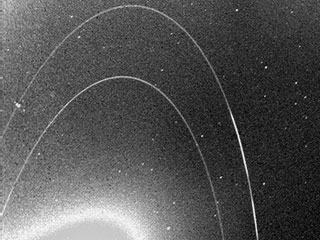

NEPTUNE

Dark, cold, and whipped by supersonic winds, ice giant Neptune is the eighth and most distant planet in our solar system.
More than 30 times as far from the Sun as Earth, Neptune is the only planet in our solar system not visible to the naked eye and the first predicted by mathematics before its discovery. In 2011 Neptune completed its first 165-year orbit since its discovery in 1846.
10 Need-to-Know Things About the Neptune
GIANT
Neptune is about four times wider than Earth. If Earth were a large apple, Neptune would be the size of a basketball.
EIGHTH WANDERER
Neptune orbits our Sun, a star, and is the eighth planet from the Sun at a distance of about 2.8 billion miles (4.5 billion kilometers).
SHORT DAY, LONG YEAR
Neptune takes about 16 hours to rotate once (a Neptunian day), and about 165 Earth years to orbit the sun (a Neptunian year).
ICE GIANT
Neptune is an ice giant. Most of its mass is a hot, dense fluid of "icy" materials – water, methane and ammonia – above a small rocky core.
GASSY
Neptune's atmosphere is made up mostly of molecular hydrogen, atomic helium and methane.
MOONS
Neptune has 14 known moons which are named after sea gods and nymphs in Greek mythology.
FAINT RINGS
Neptune has at least five main rings and four more ring arcs, which are clumps of dust and debris likely formed by the gravity of a nearby moon.
ONE VOYAGE THERE
Voyager 2 is the only spacecraft to have visited Neptune. No spacecraft has orbited this distant planet to study it at length and up close.
LIFELESS
Neptune cannot support life as we know it.
ONE COOL FACT
Because of dwarf planet Pluto’s elliptical orbit, Pluto is sometimes closer to the Sun (and us) than Neptune is.
FIRST LOOK: NEPTUNE RINGS
